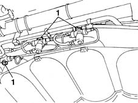
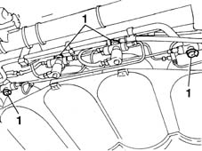
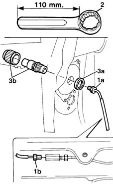

1042A34 CNG CYLINDER RECHARGE VALVE - R R
- Path
- Procedures > 10 ENGINE UNIT > 1042 METHANE GAS CANNISTER AND TUBES > 1042A METHANE GAS CANNISTER AND TUBES FOR RE-CHARGING > 1042A34 CNG CYLINDER RECHARGE VALVE - R R
- Kind
- repair procedure (removal / refitting; the operation number is the code)
- Applies to
- engines: 1.6 16v; all production periods; only with equipment: BIPOWER and BLUPOWER
- Interactive page
- https://sloeber94.github.io/elrnDB-fMltpl/en/#/2891465
Applies to: engines: 1.6 16v; production: fino a 05/04; only with equipment: BIPOWER and BLUPOWER
 Removing
Removing
 Refitting
RefittingPlace the car on a ramp.
Disconnect the battery negative terminal.
Applies to: engines: 1.6 16v; production: fino a 05/04; only with equipment: BIPOWER and BLUPOWER
1. Before working on the canisters, close the CNG manual cut out valves to prevent the escape of gas.

Applies to: engines: 1.6 16v; production: fino a 05/04; only with equipment: BIPOWER and BLUPOWER
1. Before working on the canisters, close the CNG manual cut out valves to prevent the escape of gas.

Applies to: engines: 1.6 16v; production: fino a 05/04; only with equipment: BIPOWER and BLUPOWER
1. Undo the connector (1a) connecting the repressurizing pipe from the valve and the connector (1b) from the joining hose.
2. Reduce a 32 mm diameter polygonal spanner reducing the length by around 110 mm in order to be able to gain access comfortably to the nut fixing the valve.
3. Undo the fixing nut (3a) and remove the repressurizing valve (3b).

Applies to: engines: 1.6 16v; production: fino a 05/04; only with equipment: BIPOWER and BLUPOWER
Refitting
RemovingFit the repressurizing valve in the housing.
Tighten the nut fixing the repressurizing valve.
Connect the connecting pipe with the canisters to the repressurizing valve and to the hose and tighten the connectors to torque.
 | Fastening | Component | Ø | Value (daNm) |
|---|---|---|---|---|
- | Nut | REPRESSURIZING VALVE | M10 | 2.5 |
Open the CNG manual cut out valves.
Op. 7055B43 LH OR RH REFLECTOR(ONE) ON REAR BUMPERS - R R
Connect the battery negative terminal.
Remove the vehicle from the ramp.
Applies to: engines: 1.6 16v; production: da 06/04; only with equipment: BIPOWER
Op. 1042A43 CNG REPRESSURIZING PIPE FROM REPRESSURIZING VALVE TO SINGLE-ACTING VALVE - R.R.